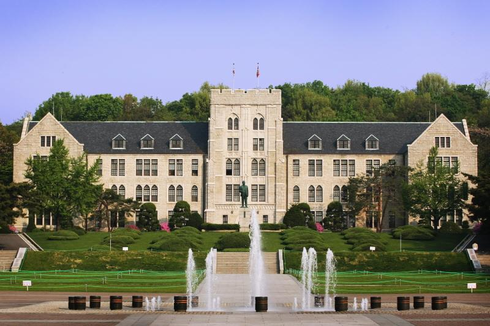

고려대학교

고려대학교(高麗大學校, 영어: Korea University)는 대한민국의 사립 종합대학이다. 대한제국 광무 9년인 1905년 이용익이 설립한 한국 최초의 근대 고등교육기관 보성전문학교(普成專門學校)로 출발하였다. 을사조약이 학교 설립 이후 체결되자 이용익이 망명하여 천도교 지도자 손병희가 경영권을 이어받았고 김성수가 1932년 경영난에 허덕이던 보성전문학교를 인수하였다. 1946년 4년제 대학으로 승격돼 고려대학교로 개칭하고 종합대학교로 개교하였다. 1952년 12월에는 문과대학을 문리과대학으로 개편하고 1971년에는 우석대학교 의과대학을 흡수 합병해 이공·인문·의예·예체능 관련 학과를 고루 갖추게 됐다. 고려대학교는 독재 정권에 항거하여 1960년 4·19 혁명의 촉매제가 된 4·18 의거를 비롯한 각종 시위의 중심에 서기도 하였다. 박정희 대통령이 1975년 4월에 공포한 긴급조치 제7호는 고려대학교만을 대상으로 한 것이다.
상징 동물은 호랑이, 교색(校色)은 크림슨, 교목(校木)은 잣나무, 교화(校花)는 철쭉이며, 교훈(校訓)은 ‘자유·정의·진리’(라틴어: Libertas, Justitia, Veritas)이다. 약칭으로 고려대 또는 고대라고 부르기도 한다.
고려대학교 화공생명공학과
화공생명공학이란 천연자원, 생물자원으로부터 인간의 문화 생활에 필요한 물질을 만드는 화학, 물리 및 생물 공정의 개발, 설계, 운전 및 관리 운영을 연구하는 학문이다.